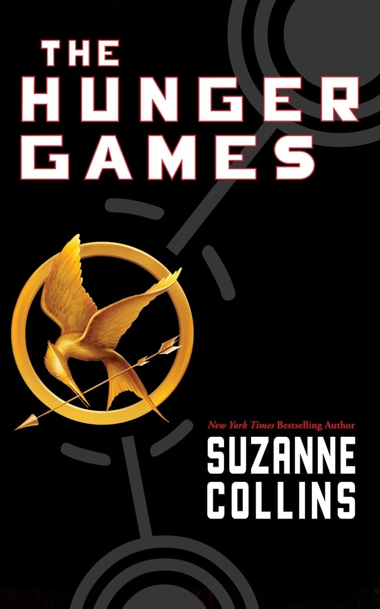

←

Details:
Winning means fame and fortune. Losing means certain death. The Hunger Games have begun. . . .
In the ruins of a place once known as North America lies the nation of Panem, a shining Capitol surrounded by twelve outlying districts. The Capitol is harsh and cruel and keeps the districts in line by forcing them all to send one boy and one girl between the ages of twelve and eighteen to participate in the annual Hunger Games, a fight to the death on live TV.
Sixteen-year-old Katniss Everdeen regards it as a death sentence when she steps forward to take her sister's place in the Games. But Katniss has been close to dead before-and survival, for her, is second nature. Without really meaning to, she becomes a contender. But if she is to win, she will have to start making choices that weigh survival against humanity and life against love.
Personal Notes:
- The pillar of the Dystopian genre
- Great pacing
- Wish certain characters stayed around longer
- I love Katniss, she has a very distinct personality
- I love Peeta, my king with the bread